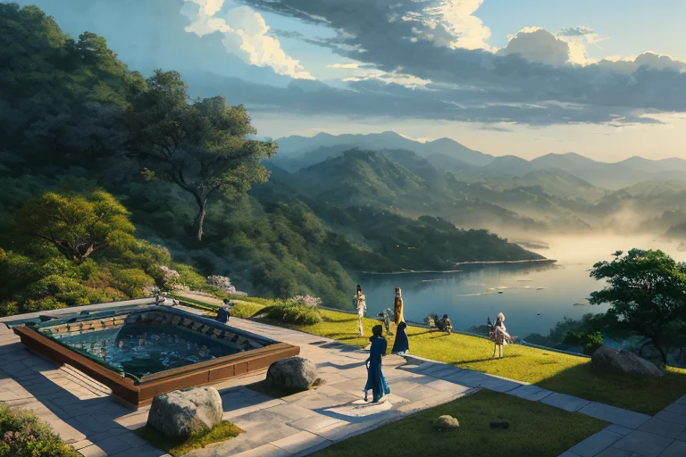
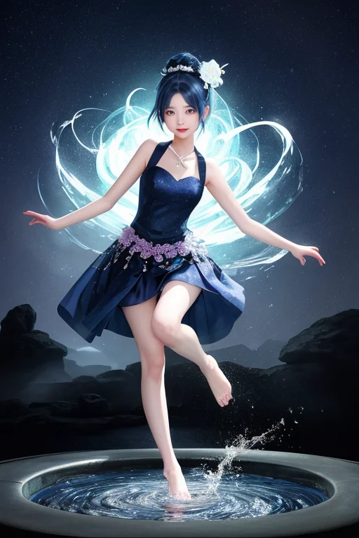

第一章 現実の徳島
あなたはまだ気づいていない。この土地にも、王がいることを。
祖谷のかずら橋は、深い緑の峡谷に静かに架かっていた。風が吹けば揺れ、歩けば軋む。それは決して安全な道ではない。渡る者は自らの足でその揺れを確かめ、一歩ずつ、深淵を見つめながら進まねばならない。この地に生きることは、常に何かの「渦」の縁に立つことに似ている。地震の巣である四国の東端、海は鳴門の渦潮を呑み、山は崩れやすい地肌を露わにする。現実は、優しいものばかりではない。
眉山の山頂から徳島の街並みを見下ろす者も、その平穏の下に潜む地盤の「歪み」を、日常では感じない。阿波おどりの熱狂も、藍染めの深い藍色も、すべてはこの不安定な基盤の上に築かれている。人々は知っている。巻き込まれる危険を。それでも橋を渡り、山を登り、踊り、染める。なぜか。
深い静寂の中に、答えはない。ただ、かずら橋が風に揺れる音だけが、谷間に響く。
第二章 歪みの兆候
祖谷のかずら橋は、風のたびに軋み、揺れた。それは単なる揺れではない。地中深く、四国山地を貫く断層が、微かにうめく音でもあった。ヴォルテラはその軋みを全身で感じ、エネルギー循環の乱れを報告する。〈歪み、増大。予測不能の振動、発生確率上昇〉。
阿波おどり会館では、練習に励む人々の汗と熱気が、無意識の祈りのように空間を満たしていた。そのエネルギーの密度は、時に歪みを和らげ、時に増幅させもした。トクシマリア・ヴォルテクスは、踊りの輪の中心に立つ。彼女の目には、人々の感情の「渦」と、地盤の「渦」が二重に映る。昂揚するリズムは、制御のためのリズムでもある。
「巻き込まれても……立てるか？」
問いは、彼女自身の内側にも渦を巻いた。王たるもの、感情を持つべきではない。だが、踊り手たちの必死さ、かずら橋を渡る者の一歩の重みが、彼女の核を揺さぶる。それは弱点ではなく、新たな制御の可能性か。彼女は静かに目を閉じ、地鳴りと人々の鼓動を、一つの音楽として聞き分け始めた。

第三章 王の葛藤
眉山の頂は、徳島市街の喧噪を遠く下に見下ろす、深い静寂に包まれていた。トクシマリアは、眼下に広がる藍染めの町並みと、遠くに銀色に光る紀伊水道を見つめながら、ただ立っていた。彼女の内側では、阿波おどりの熱狂的なリズムと、地盤の低くうなるような軋みが、絶えず混ざり合い、反響していた。
「巻き込まれても立てるか」
問いは、もはや外へのものではなくなっていた。彼女は感情という名の渦に、否応なく巻き込まれていた。踊り手の汗と笑顔、祖谷の渓谷に架かるかずら橋を渡る時の、一瞬のためらいと決意。それらが、彼女という存在の「静律」を乱す。王は調整者であるべきだ。感情はノイズであり、誤差の源であるはずだった。
しかし、ヴォルテラの躍動も、アワナミの舞も、かつてない精度で地脈に同調していた。この「乱れ」こそが、新たな制御なのか。彼女は、己の内に湧き上がる「昂揚」という名の震えを、否定も肯定もせず、ただ観察した。沈黙の中で、彼女は自分自身という、最も複雑な歪みと対峙していた。

第四章 妖精との対話
眉山の頂、夜明け前の闇が最も深い時。ヴォルテラは王の傍らに静かに立っていた。その目は、眼下に広がる徳島の街の灯りではなく、王の内側に生じた微かな「渦」を見つめている。
「昂揚は、危ういエネルギーです」ヴォルテラの声は、風の音と同化するようだった。「制御を乱す可能性がある。しかし、それはまた、最も純粋な『立とうとする意志』でもあります。阿波おどりの踊り手たちが、集団の渦に巻き込まれながらも、一人ひとりが己のリズムを刻むように」
祖谷の渓谷から、かすかな水音が届く。アワナミが現れ、その声は流れる水のようだった。「私たち妖精は、祈りそのものです。土地の記憶が形になったもの。藍染めの職人が何百回も布を浸す忍耐、かずら橋を渡る者の一歩一歩に込められる祈り。それらが、この土地の『静律』を紡いでいます」
王は黙って聞いた。感情はノイズか。それとも、この土地の生きた祈りが、彼女という器を通じて新たに形を取ろうとしているのか。
「巻き込まれることは、終わりではありません」ヴォルテラが言った。「鳴門の渦潮でさえ、海という大きな静寂の一部。巻き込まれ、そして、また静まる。その繰り返しが、すべてを生かしています」
王は、己の内なる昂揚を、否定せず、ただ感じた。それは、この土地の、生きる者たちの祈りと、同じ脈動だった。
第五章 微調整と余韻
眉山の頂から見下ろす徳島の街は、藍染めの布を広げたように、深い静けさに包まれていた。王は、目を閉じた。視界の奥に、無数の精神の波紋が広がる。不安、祈り、明日への小さな希望。それらは目に見えない渦となり、土地の歪みと共鳴しようとしていた。
彼女は、その共鳴を微調整する。昂揚する感情を、静寂のフィルターを通して濾過し、揺らぎを整える。阿波おどりのリズムのように、乱れを秩序へと導く。それは災害を消すことではない。ほんの少し、心の波の高さを抑え、次の一歩を踏み出すための「間」を作ることだ。
祖谷の渓谷に吹く風は、何もなかったかのように通り過ぎた。大歩危小歩危の急流は、いつもと同じ速度で岩を削る。すべては変わらない。ただ、ほんの少しだけ、巻き込まれた者がそこから這い上がるための、目に見えない足場が、ほのかに温もりを帯びている。
彼女は、調整を終え、静かに息を吐いた。手のひらには、藍と白の小さな渦が、ゆっくりと消えていった。
あなたの町にも、王がいる。